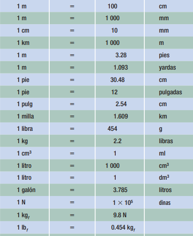
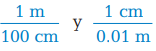
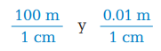
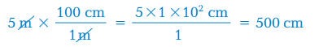
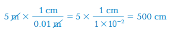

transformación de unidades de un sistema a otro
En virtud de la existencia de varios sistemas de unidades, todos ellos de uso actual, frecuentemente es necesario transformar unidades de un sistema a otro; para ello, es in
dispensable tener presentes las siguientes equivalencias:

por uno, mismo que explicaremos a continuación:
Transformar 5 m a cm
Paso 1.
Al conocer estas equivalencias podemos hacer transformaciones, empleando el método llamado de multiplicar Se escribe la cantidad con la unidad de medida que se
desea transformar:5 m
Paso 2.
Se pone el signo de multiplicación y una raya de quebrado, ambos signos nos indicarán que haremos dos operaciones, una de multiplicación y otra de división.
5 m x ------------------
Paso 3.
Recordamos la equivalencia unitaria entre las dos unidades involucradas, es decir, la que vamos a transformar y la que deseamos obtener; con ello encontraremos el
llamado factor de conversión. En este paso siempre tendremos la posibilidad de recordar cualquiera de las dos maneras de expresar las equivalencias que existen entre
dos unidades de medida. En nuestro caso, tenemos que
1 m = 100 cm, o bien, 1 cm= 0,01m. Estas dos equivalencias proporcionan dos factores de conversión, que son los siguientes:

mismos que también pueden escribirse como:

Como en cualquiera de los factores de conversión dividimos una cantidad entre otra cantidad del mismo valor, pero, expresada en diferente unidad de medida, el
cociente da un valor igual a uno, de ahí el nombre del método, es decir, de multiplicar por uno.
Paso 4.
Una vez obtenido cualquiera de los dos factores de conversión, bastará seleccionar aquel en que al hacer nuestras operaciones pueda eliminarse la unidad que se desea convertir:

o bien
